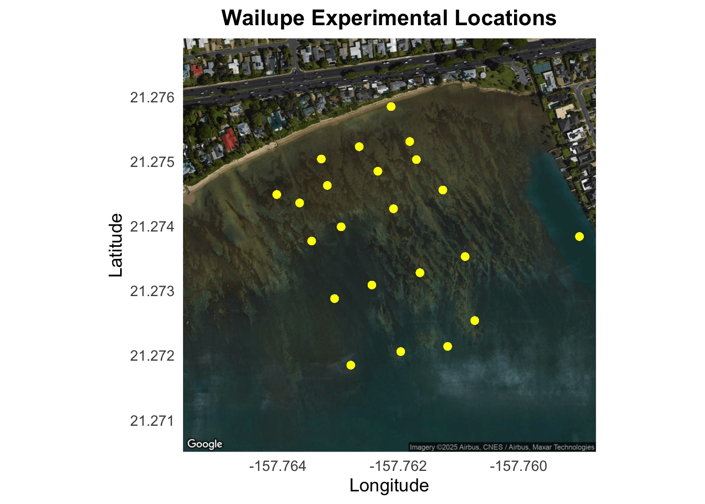
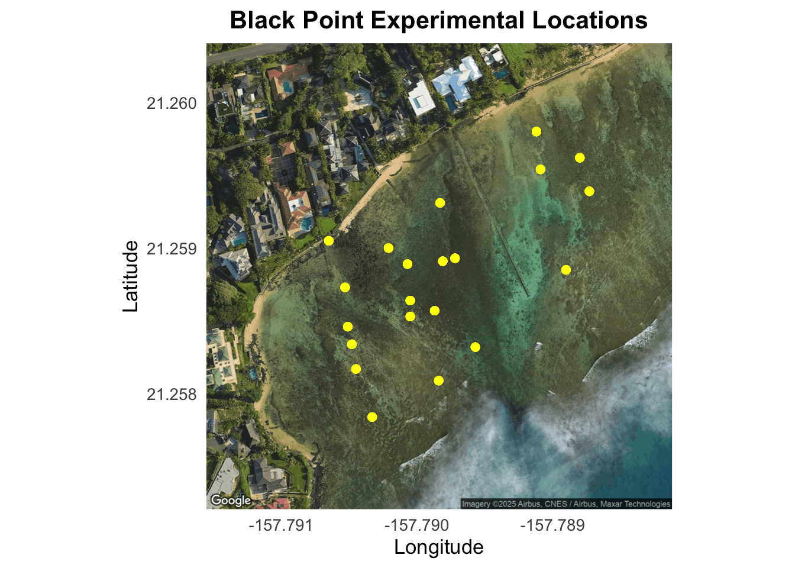

library(tidyverse)
library(here)
library(ghibli)
library(forcats)
library(stringr)
library(ggmap)
library(sf)Week 10 Homework
Introduction
Homework
Use any dataset you would like and make two useful functions. One that is a plot and one that is not. Turn in your functions using Quarto with at least 2 examples per function showing its flexibility. Due, as always, at 1pm on Tuesday.
Three key steps to creating a new function:
You need to pick a name for the function. Here I’ve used rescale01 because this function rescales a vector to lie between 0 and 1.
You list the inputs, or arguments, to the function inside function. Here we have just one argument. If we had more the call would look like function(x, y, z).
You place the code you have developed in body of the function, a { block that immediately follows function(…).
- function() then {}
- return tells us what values we want returned when you run the function
Load Libraries
Read Data
chemdata<-read_csv(here("Week_10","Data","chemicaldata_maunalua.csv")) # Maunalua chem dataglimpse(chemdata)Rows: 355
Columns: 15
$ Waypoint <dbl> 1, 2, 3, 4, 5, 6, 7, 8, 9, 10, 11, 12, 13, 14, 15, 16, 17,…
$ Zone <chr> "Transition", "Transition", "Transition", "Transition", "D…
$ Lat <dbl> 21.27531, 21.27523, 21.27504, 21.27449, 21.27503, 21.27485…
$ Long <dbl> -157.7618, -157.7627, -157.7633, -157.7640, -157.7617, -15…
$ Site <chr> "W", "W", "W", "W", "W", "W", "W", "W", "W", "W", "W", "W"…
$ Season <chr> "SPRING", "SPRING", "SPRING", "SPRING", "SPRING", "SPRING"…
$ Tide_time <chr> "Low_Day", "Low_Day", "Low_Day", "Low_Day", "Low_Day", "Lo…
$ Temp_in <dbl> 23.75506, 23.53256, 22.63450, 24.01982, 23.26102, 24.00517…
$ Salinity <dbl> 27.74029, 30.61192, 28.37008, 32.82124, 29.12293, 34.02018…
$ Phosphate <dbl> 0.54, 0.36, 0.50, 0.25, 0.50, 0.13, 0.28, 0.15, 0.23, 0.11…
$ Silicate <dbl> 157.93, 92.59, 143.60, 42.32, 126.47, 15.04, 56.31, 23.10,…
$ NN <dbl> 7.92, 3.37, 7.29, 0.79, 7.45, 0.46, 1.59, 0.34, 1.91, 0.25…
$ pH <dbl> 7.909, 7.965, 8.023, 7.995, 8.005, 8.019, 8.003, 7.978, 7.…
$ TA <dbl> 2161.482, 2145.828, 2272.391, 2219.583, 2151.826, 2216.758…
$ percent_sgd <dbl> 20.4043928, 11.9625323, 18.5529716, 5.4677003, 16.3397933,…Clean the Data
chemdata_clean<-chemdata %>%
drop_na() %>% #filters out everything that is not a complete row
# Pivot Longer
pivot_longer(cols = c(pH, Salinity, NN, Silicate, Phosphate, TA, percent_sgd), # pH, salinity, and nutrients
names_to = "Variable", # columns for those
values_to = "Value") %>% # measurement and all metadata
# Summarise Means and Variances
group_by(Site, Lat, Long, Variable) %>% # group by zone and variables
summarise(parameter_mean = mean(Value, na.rm = TRUE), # get mean
parameter_variance = var(Value, na.rm = TRUE)) # get variance
#View(chemdata_clean)Make a Function 1 (Not a Plot)
Start out by writing the code you want to use:
variation<-(variance / ((mean)^2)
Then figure out what are the different arguments and the inputs and outputs. For example, I want to use Lubarsky et al. 2018 calculation of pH variance.
variation_equation<-function(variance, mean) { # name the function and add arguments
variation<-variance / ((mean)^2) # put in equation for pH variation
return(variation) # output the result
}Function 1 Example 1
Calculate pH variation of experimental locations in Wailupe from chemdata:
pH_wailupe_variation<-chemdata %>%
drop_na(pH) %>% # drop NAs for pH
group_by(Site, Lat, Long) %>%
filter(Site == "W") %>%
summarise(pH_mean = mean(pH, na.rm = TRUE),
pH_variance = var(pH, na.rm = TRUE)) %>%
mutate(variation = variation_equation(pH_variance, pH_mean))
pH_wailupe_variation# A tibble: 25 × 6
# Groups: Site, Lat [25]
Site Lat Long pH_mean pH_variance variation
<chr> <dbl> <dbl> <dbl> <dbl> <dbl>
1 W 21.3 -158. 7.98 0.000800 0.0000126
2 W 21.3 -158. 8.03 0.0000405 0.000000627
3 W 21.3 -158. 7.95 0.000882 0.0000139
4 W 21.3 -158. 8.00 0.00719 0.000112
5 W 21.3 -158. 8.01 0.00590 0.0000919
6 W 21.3 -158. 8.04 0.00683 0.000106
7 W 21.3 -158. 8.05 0.00758 0.000117
8 W 21.3 -158. 8.00 0.0115 0.000179
9 W 21.3 -158. 8.02 0.00691 0.000107
10 W 21.3 -158. 8.02 0.00768 0.000119
# ℹ 15 more rowsFunction 1 Example 2
Calculate all parameter variation in both sites from chemdata:
chemdata_variation<-chemdata_clean %>%
mutate(variation = variation_equation(parameter_variance, parameter_mean)) # calculates variation for all parameters
head(chemdata_variation)# A tibble: 6 × 7
# Groups: Site, Lat, Long [1]
Site Lat Long Variable parameter_mean parameter_variance variation
<chr> <dbl> <dbl> <chr> <dbl> <dbl> <dbl>
1 BP 21.3 -158. NN 0.72 0.638 1.23
2 BP 21.3 -158. Phosphate 0.143 0.000890 0.0436
3 BP 21.3 -158. Salinity 34.4 0.0463 0.0000391
4 BP 21.3 -158. Silicate 7.52 26.6 0.471
5 BP 21.3 -158. TA 2254. 1061. 0.000209
6 BP 21.3 -158. pH 8.07 0.0197 0.000302 Make a Function 2 (Plot)
Make a map plot of latitude and longitude coordinates of experimental locations, like that in Lubarsky et al. 2018 or Silbiger et al. 2020:
Note: You will need your own Google Maps API key sorry
# register_google(key = "") # use your own API in between the "" in R console
# Site maps for any latitude/longitude data
chemdata_map<-function(data, x, y,
maptype = "satellite", #Google map type
zoom = 17, # zoom into center
pt_size = 2,
pt_col = "yellow")
{ # name function and determine arguments
# palette<-scale_color_ghibli_d("MarnieMedium2", direction = -1) # nice colors if I am creating a legend for NEP or pH perhaps
# Pull longitude and latitude automatically from any column data as numeric vectors
lon<-pull(data, {{ x }}) # uses dplyr
lat<-pull(data, {{ y }})
# center map at mean coordinates
map_center<-c(lon = mean(lon, na.rm = TRUE),
lat = mean(lat, na.rm = TRUE))
basemap<-get_googlemap(center = map_center,
maptype = maptype, zoom = zoom) #base map from Google Maps
ggmap(basemap) +
geom_point(data = data, mapping = aes(x = {{x}}, y = {{y}}), # uses rlang to signify it is within dataset
size = pt_size, color = pt_col) + # constants outside aes()
theme_minimal(base_size = 13) +
theme(plot.title = element_text(face = "bold", hjust = 0.5),
panel.grid = element_blank())
}Function 2 Example 1
Map of experimental locations for Wailupe:
chemdata %>%
filter(Site =="W") %>%
chemdata_map(Long, Lat) +
labs(x = "Longitude", y = "Latitude", title = "Wailupe Experimental Locations") # could add this into the function when I have more time to figure that out
Function 2 Example 2
Map of experimental locations for Black Point:
chemdata %>%
filter(Site =="BP") %>%
chemdata_map(Long, Lat, zoom = 18) +
labs(x = "Longitude", y = "Latitude", title = "Black Point Experimental Locations")
Extra:
Future things to do when more time: make a scale bar.
See the way Nyssa did it.
# ggsave(here("Week_10","Output","functionplot1_HW10.png"))
# Empty your environment before you start working
# Restart R
# .rs.restartR()
# remove whole list in enviroment
# rm(list = ls())